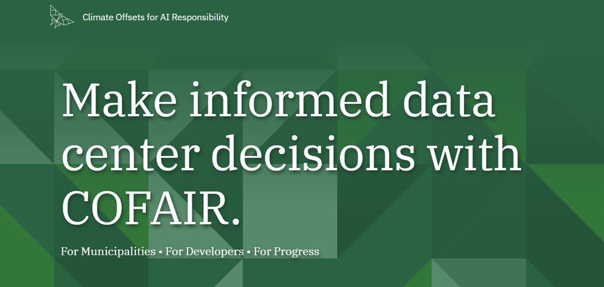
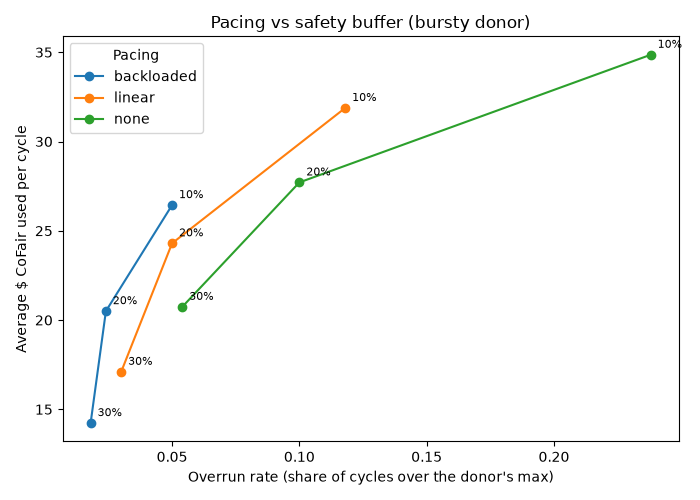

climate offsets for ai responsibility. donors share their spare ai credits so nonprofits can use them. i figured out how much cofair can take from each donor, and when to stop.

the problem
donors share api keys with leftover capacity. we want to use as much as we can, but if we push someone past their budget, they get a surprise bill and probably never donate again.
what i built
donor says $20 a month. we spend $20 and stop.
we use whatever's left over, without pushing them past their max.
how fast the allowance opens up: all at once, evenly, or saved for late in the month.
keep a buffer untouched, and take nothing the first 3 days until we know their habits.
routing just asks can_route() if a task fits on a key.
testing the rules
i simulated a month of steady, bursty, and ramping-up donors, 500 times each, with 10%, 20%, and 30% buffers.
